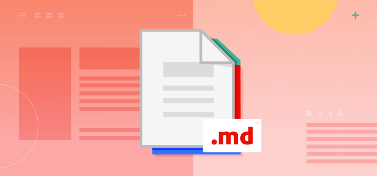

What is the purpose of a README file
according to GitHub Docs, a README file serves as the primary source of information about a project and helps users understand how to install, use, and contribute to it (GitHub Docs, n.d.).
A README file is one of the most important documents within a software project. It is usually the first file that users, developers, recruiters, or potential employers look at when they visit a project's repository. The name "README" comes from the idea that it should be the file people read before doing anything else with the project.
README file ...